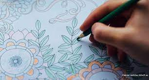
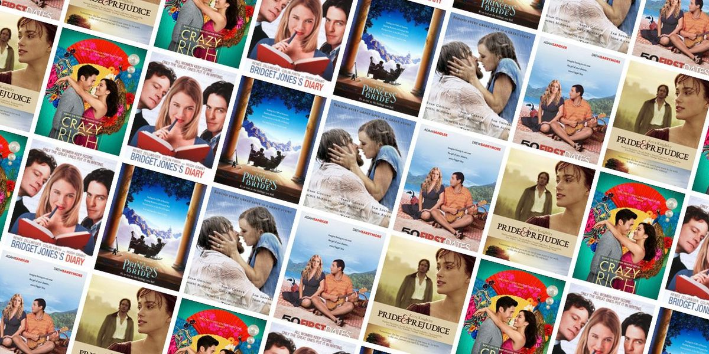

My hobbies

Music
Music is my ultimate passion. I play the guitar and love to explore different genres. There's nothing like the joy of creating and listening to beautiful melodies.

Dibujar
Me gusta dibujar, pero aun más que dibujar, me gusta colorear. Al colorear se les da vida a los dibujos, y es bastante interesante como se puede jugar aplicándoseles colores diferentes a objetos que originalmente no llevan un determinado color, como por ejemplo usar el color amarillo para dar luminosidad al dibujo o usar tonos verdes o morados para dar oscuridad.

Ver peliculas
Disfruto mucho ver cualquier tipo de película, mi género preferido suele ser la comedia.